BIOME-next — guide illustré
Version 3.0.0-alpha.7 · Windows · 26 octobre 2026
BIOME-next poursuit le développement de BIOME 2.x, avec une architecture documentaire remaniée. L’ancien dépôt conserve l’historique ; le développement actif se poursuit ici. Cette préversion fonctionne en français. L’anglais par défaut et les fichiers de traduction restent à venir.
Depuis alpha.3, les messages acceptent 50 Mo et les illustrations 10 Mo ; certaines captures alpha.2 montrent encore les anciennes limites. Le total par entrée est de 100 Mo et l’extraction des illustrations est plafonnée à 50 Mo.
Toutes les captures ci-dessous proviennent de l’application réelle et utilisent exclusivement des identités, images et temps fictifs. Les dates et valeurs illustrent les fonctions, pas des résultats scientifiques.
Le parcours de travail
Demande → projet → originaux conservés → cadrage → essais et échanges → livraison → bilan.
Un conseil rapide peut se limiter à un projet, quelques images, une note avec le temps passé et la réponse envoyée. Un développement ajoute des essais, versions de scripts et livraisons successives. Une analyse complète peut référencer de grands volumes et conserver les résultats à transmettre. Les quatre interventions principales sont conseil, formation, développement et analyse.
| Élément | Contenu | Emplacement |
|---|---|---|
| Catalogue | Fiches, cahier, annuaire, scripts, petits documents, reçus, corbeille et livraisons | Un dossier choisi par vous |
| Originaux et gros dérivés | Images reçues et fichiers volumineux | Un autre dossier local, disque ou NAS |
| Livraison | Copie figée des éléments sélectionnés et contexte du projet | ZIP conservé dans le catalogue |
| Réglages | Dernier catalogue, état local et journaux | %LOCALAPPDATA%/BIOME |
Sauvegardez séparément le catalogue et les originaux. Déplacer le catalogue ne déplace pas les données référencées.
1. Installer et démarrer
Depuis la release, téléchargez BIOME-Windows-portable-3.0.0-alpha.7.zip. Extrayez tout le ZIP dans un dossier où vous pouvez écrire, puis ouvrez BIOME/BIOME.exe. Gardez le dossier _internal avec l’exécutable. Aucun Python ni serveur à installer. Chrome ou Edge fournit la fenêtre dédiée, sans les onglets du navigateur habituel.
Au premier démarrage, BIOME propose trois choix : créer un catalogue vide, ouvrir un catalogue existant, ou installer la démo. Les démarrages suivants rouvrent le dernier catalogue accessible. Quitter BIOME arrête le service local ; utilisez ce bouton lorsque vous avez terminé.
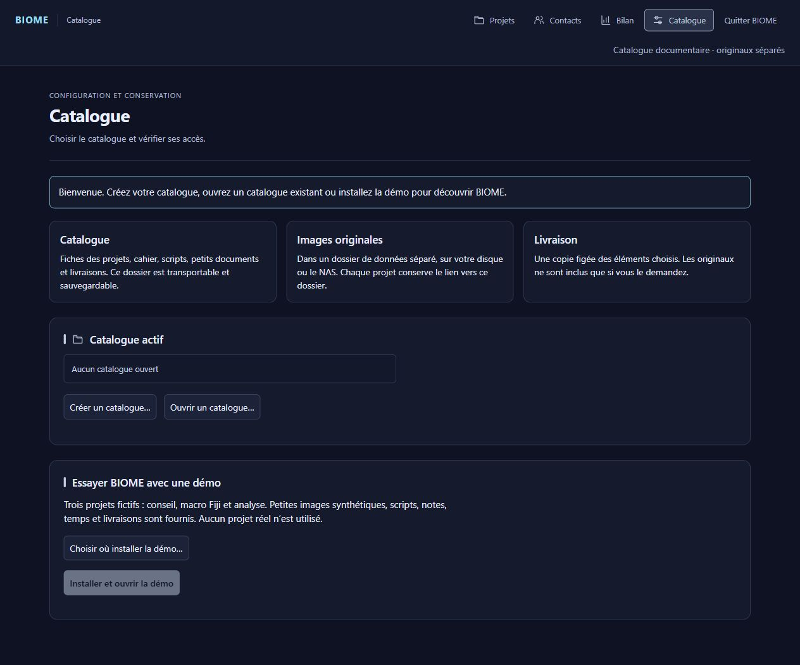
2. Créer ou ouvrir un catalogue
Dans Catalogue → Créer un catalogue…, choisissez un nom et un dossier parent. BIOME crée un nouveau sous-dossier identifiable, sans remplacer un dossier existant. Ouvrir un catalogue… sélectionne un catalogue déjà reconnu. Les Catalogues récents permettent de retrouver les catalogues utilisés auparavant.
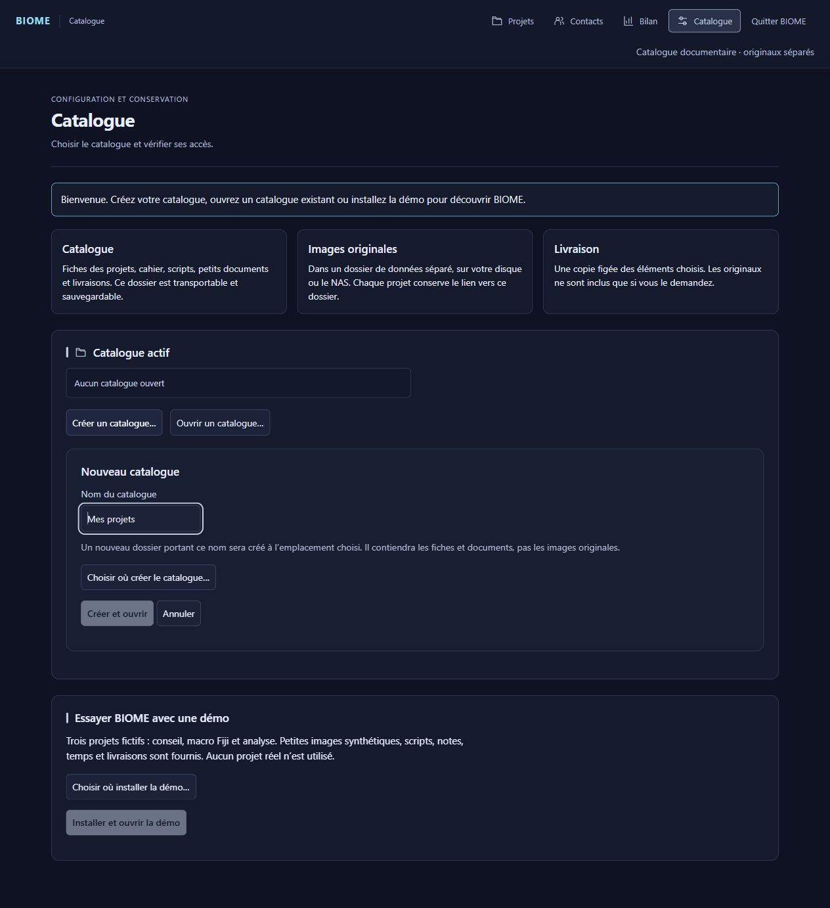
3. Essayer la démonstration
Dans Catalogue → Essayer BIOME avec une démo, choisissez où l’installer puis confirmez. Le dossier BIOME-Demo contient deux dossiers séparés : Catalogue et Originals. Il propose trois projets : conseil en segmentation, macro Fiji et analyse d’images synthétiques. Une installation existante n’est pas écrasée : choisissez un autre emplacement pour une nouvelle démo. Votre catalogue habituel reste dans les catalogues récents.
4. Retrouver et trier les projets
Projets affiche le catalogue actif. Recherchez par titre, contact ou groupe ; filtrez par statut. Cliquez sur un en-tête pour trier par projet, groupe/contact, statut, création ou dernière activité ; recliquez pour inverser le sens. Les dates inconnues restent inconnues. Cliquez sur le titre d’un projet pour l’ouvrir.
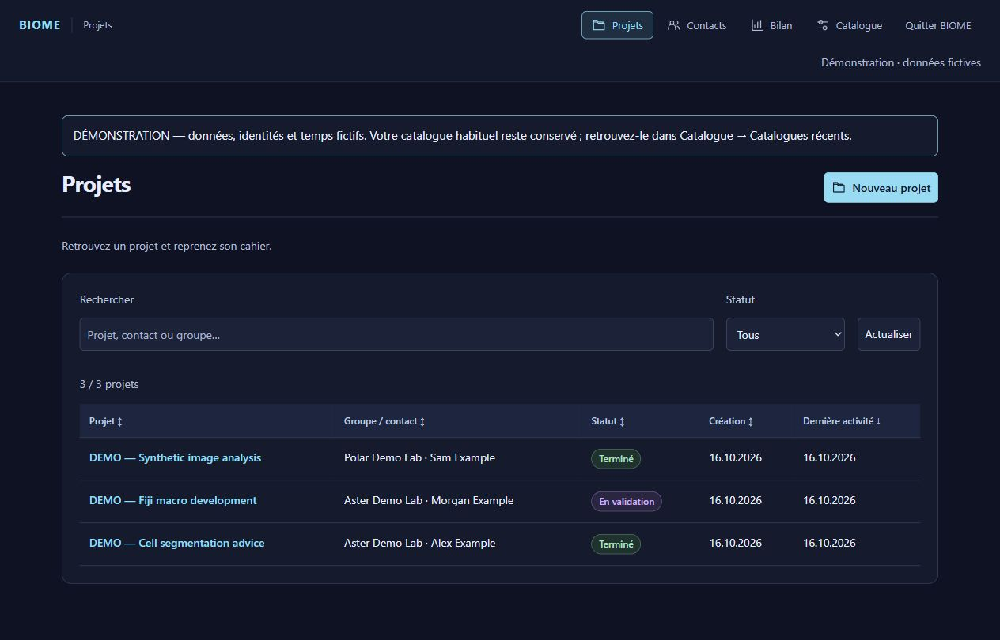
5. Commencer un projet
Cliquez sur Nouveau projet. Saisissez un titre court, le contact et la demande initiale. L’adresse et le groupe sont facultatifs. Les noms de l’annuaire sont proposés pour éviter les variantes d’orthographe. Dans Où seront conservées les images originales ?, vous pouvez désigner leur dossier séparé ; ce choix peut attendre la réception des images. Le projet commence au statut À cadrer et conserve la demande comme première entrée du cahier.
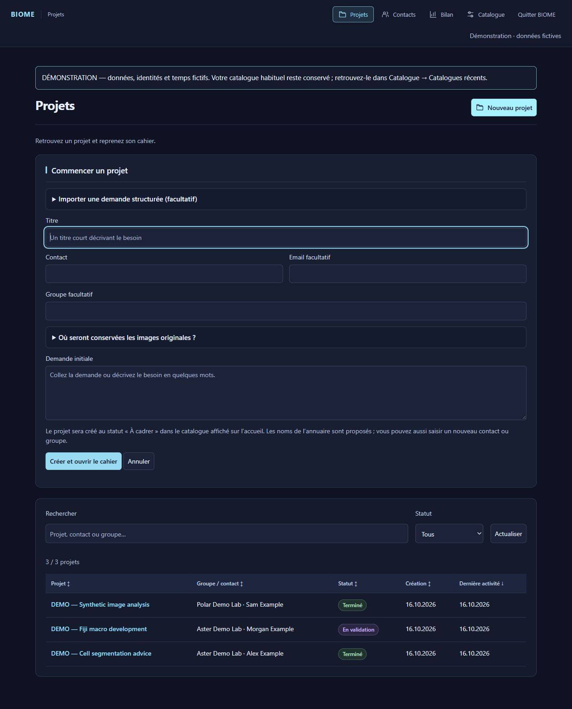
Importer une demande structurée
Ce préremplissage est déterministe : il attend des libellés explicites comme Project title, Contact Email ou Research group. Choisissez un .msg, .eml, .txt ou collez les réponses d’un formulaire. Vérifiez les propositions avant création. Les valeurs déjà saisies sont préservées. Un email libre reste conservé comme texte ; il n’est pas analysé par une IA pour deviner les coordonnées, l’objectif ou le groupe.
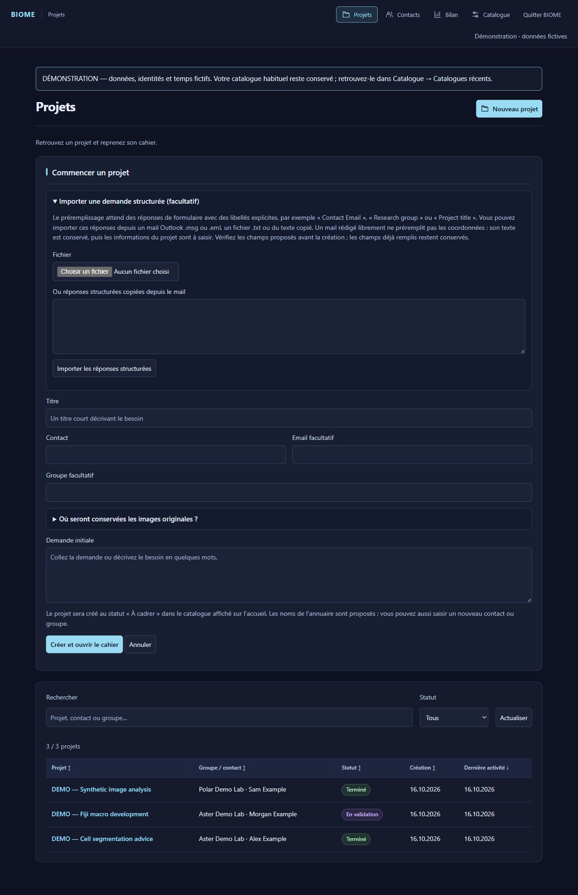
6. Corriger le titre et les attributions
Dans le projet, Modifier les informations permet de corriger le titre, le contact, l’email et le groupe. La liste et le bilan reflètent ces corrections. Le dossier conserve son nom ; la demande initiale et les livraisons existantes conservent leur contenu. Pour corriger une variante de groupe, sélectionnez le nom commun déjà utilisé.
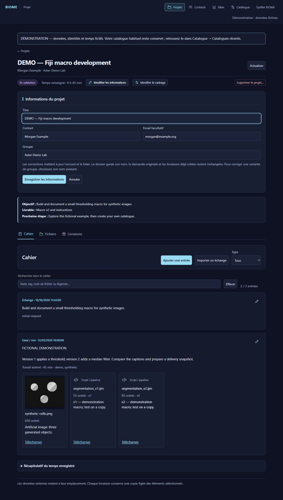
7. Cadrer ce qui est convenu
Modifier le cadrage rassemble le statut, l’intervention principale, l’objectif, le livrable attendu et la prochaine étape. La validation, les logiciels, modalités et thématiques sont facultatifs. Précisez ces éléments quand vous les connaissez : une demande rapide ne nécessite pas un dossier scientifique complet.
La prochaine étape est le repère actuel pour reprendre le travail. Le cahier conserve les essais, échanges et décisions datés. Ces deux informations ont des rôles complémentaires.
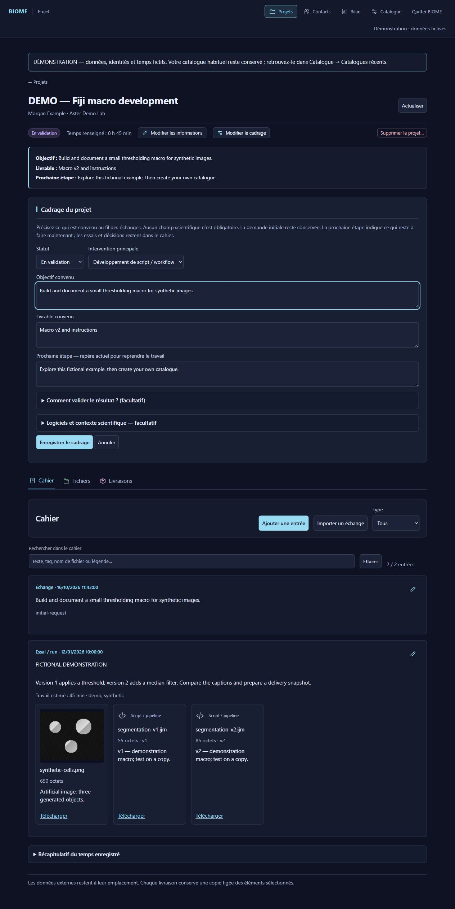
8. Tenir le cahier
Le Cahier présente les entrées datées. Filtrez par type : note de travail, essai/run, réunion, échange ou décision. La recherche retrouve du texte, des tags, noms de fichiers et légendes. Modifier corrige une entrée existante ; Actualiser relit les fichiers du projet.
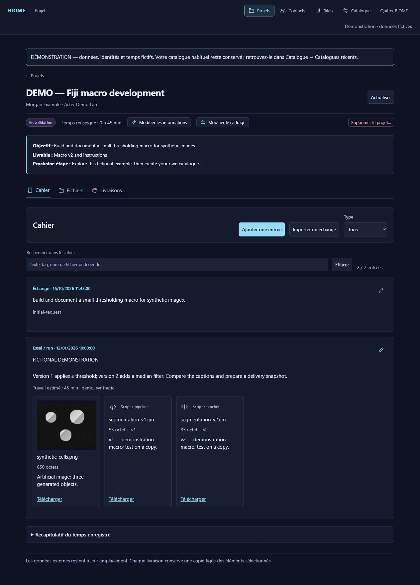
Ajouter une entrée et le temps passé
Ajouter une entrée ouvre le formulaire. Choisissez le type, la date et l’heure de l’activité, écrivez une note utile et ajoutez éventuellement des tags et petits fichiers. Le temps correspond au travail humain estimé, saisi une seule fois pour une séance même si plusieurs notes la décrivent. Laissez vide si inconnu ou déjà compté ; vide ne signifie pas zéro travail. Le récapitulatif affiche les séances enregistrées.
Les pièces jointes du cahier sont limitées à 100 fichiers, 10 Mo chacun (50 Mo pour un message ou fichier texte) et 100 Mo au total. Référencez ou recevez les gros fichiers via Fichiers.
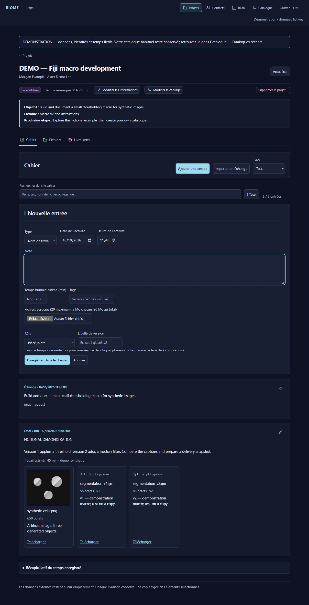
Importer un échange
Importer un échange accepte .msg, .eml, .txt ou du texte copié. L’import prépare une entrée à relire ; il ne l’enregistre pas silencieusement. Le .msg permet de conserver le message original et de récupérer ses illustrations selon son contenu et les limites de taille. Les pièces jointes d’un .eml restent dans le message source. Vérifiez texte, date et fichiers avant d’enregistrer.
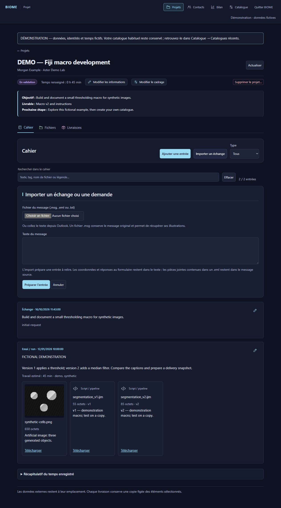
Modifier une note dans un autre outil
Une note enregistrée peut être relue après modification externe avec Actualiser. La protection intervient quand une note a changé sur disque depuis l’ouverture de son formulaire de modification dans BIOME : l’enregistrement ne doit pas écraser silencieusement cette nouvelle version. Ouvrir un fichier dans VS Code sans l’enregistrer ne change pas le fichier et ne le verrouille pas.
9. Gérer fichiers, données et scripts
Fichiers distingue les jeux de données conservés ou référencés et les pièces jointes du cahier. Ajouter des données enregistre un emplacement et son utilisation sans copier les fichiers. Voir le chemin affiche la référence ; l’icône de dossier ouvre son emplacement ; l’icône de modification corrige les informations associées. Les liens nécessitent que le disque ou NAS reste accessible.
Les pièces jointes peuvent être téléchargées ou retrouvées dans leur entrée avec Voir dans le cahier. Une image peut être agrandie.
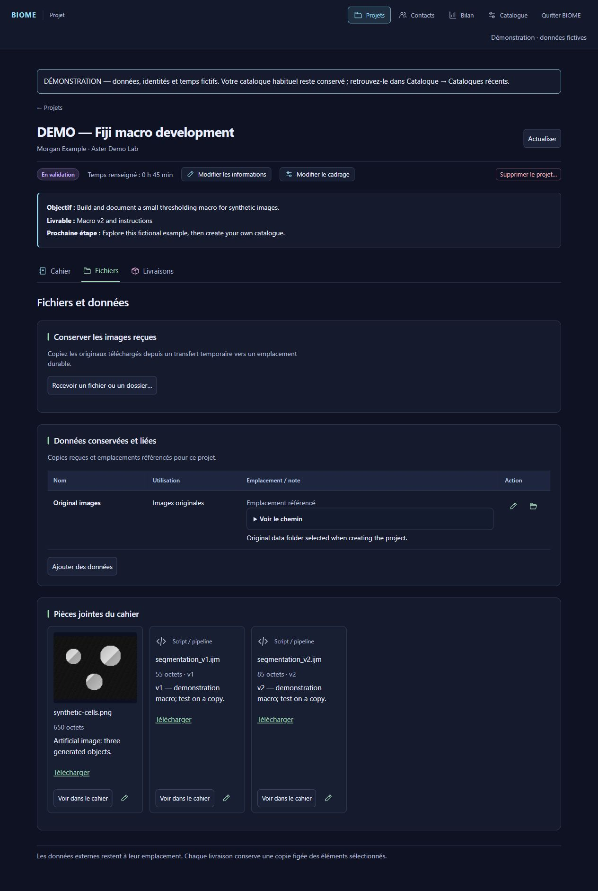
Recevoir des originaux depuis un transfert temporaire
Choisissez Recevoir un fichier ou un dossier…, sélectionnez la source téléchargée et nommez le jeu d’images. Préparez la réception, choisissez un stockage durable séparé du catalogue, puis lancez la copie. BIOME vérifie la copie par empreintes et conserve un reçu avec sa provenance. La source est conservée. Pour un nouveau catalogue, les originaux ne sont pas copiés dans le dossier documentaire.
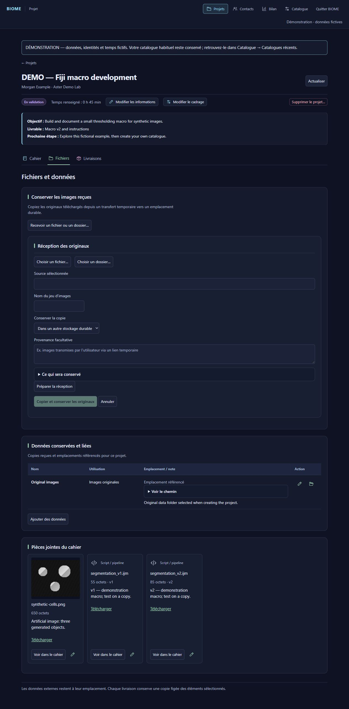
Documenter une version de script
Lors de l’ajout d’une pièce jointe, le rôle Version de script / pipeline permet un libellé. Dans Fichiers, utilisez le crayon pour corriger ensuite le libellé et la légende, par exemple v3 — ajout du filtre médian. Cela décrit le fichier joint ; cela ne renomme pas son fichier source et ne remplace pas un système Git pour le code. Joignez un nouveau fichier pour conserver une nouvelle version du script. Les livraisons déjà créées restent figées.
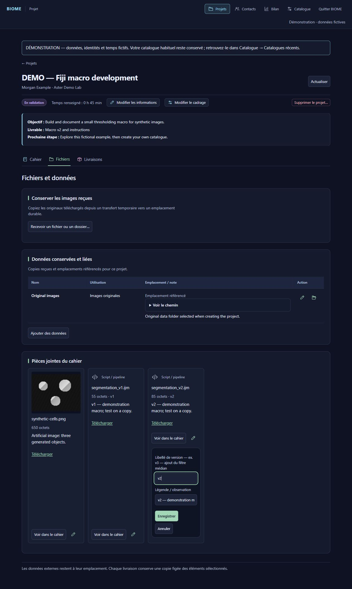
10. Préparer une livraison
Dans Livraisons → Préparer une livraison, rédigez un message et sélectionnez les fichiers à transmettre. Pour les données liées, choisissez explicitement de ne pas transmettre, de mentionner le chemin ou d’inclure les fichiers. Un chemin interne n’est pas forcément accessible au destinataire ; inclure de grands volumes demande du temps et de la place.
Le ZIP conserve les éléments choisis et le contexte du projet au moment de sa création. Une modification ultérieure du cahier ou du cadrage ne modifie pas une livraison existante. BIOME prépare le ZIP ; vous l’envoyez ensuite par le canal approprié.
Les contenus sont regroupés par entrée du cahier, avec leur date, nom d’origine, légende et version. Cliquez sur une ligne pour l’aperçu ; cochez sa case pour l’inclure. La recherche et les filtres conservent votre sélection. Les images peuvent être agrandies ; les scripts et messages disposent d’un aperçu texte. Les messages sources et archives techniques sont séparés et ne sont transmis que si vous les cochez explicitement.
Modifier le libellé change le titre pour cette livraison seulement, sans renommer les fichiers sources. Passez à Vérifier la livraison, contrôlez les documents et les données liées, puis rédigez le message et créez le ZIP. Si un fichier a changé depuis la sélection, actualisez le projet et vérifiez-le à nouveau. Le contexte et l’historique du projet sont inclus automatiquement ; le contenu des notes non sélectionnées ne l’est pas.
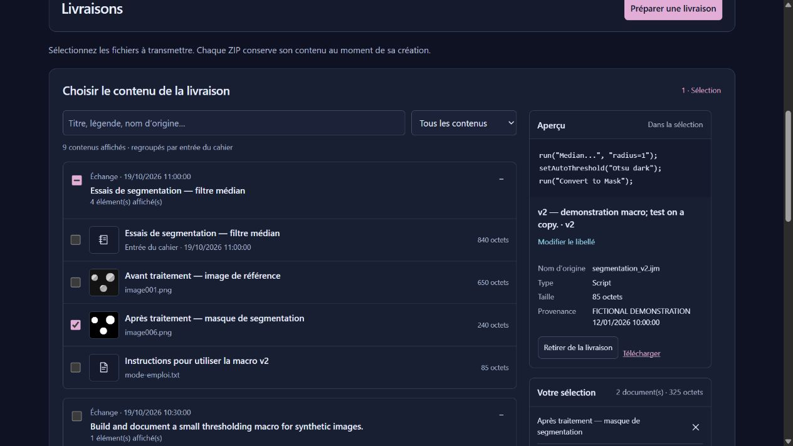
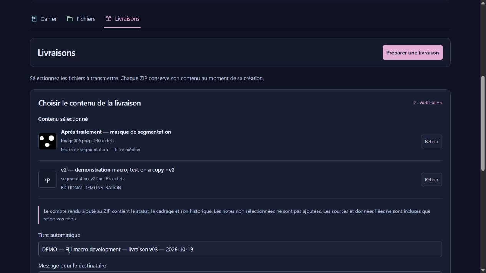
Les livraisons numérotées restent disponibles avec leur date, commentaire et lien de téléchargement. Une correction transmise donne lieu à une nouvelle livraison.
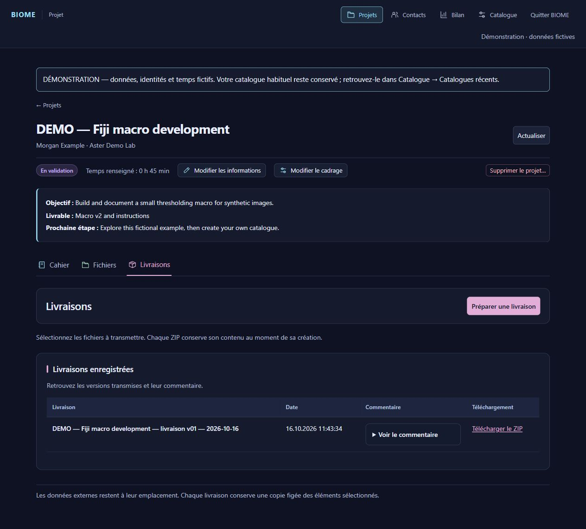
11. Réutiliser contacts et groupes
Contacts présente l’annuaire commun au catalogue. Ajoutez un contact avec son email facultatif, ou un groupe. Les actions Modifier corrigent les entrées et leurs attributions associées. Réutilisez un même nom pour un même groupe. Des noms distincts ne sont pas fusionnés automatiquement.
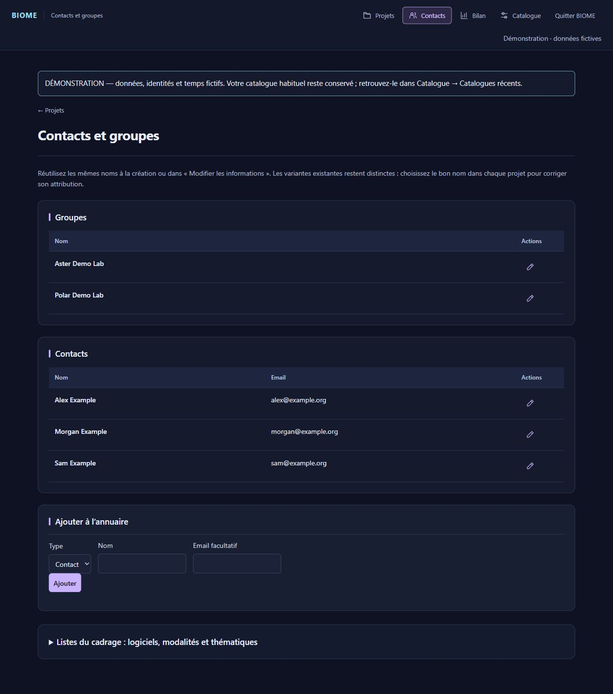
Entretenir les listes du cadrage
Dépliez Listes du cadrage : logiciels, modalités et thématiques. Choisissez une liste, ajoutez ou renommez une valeur, ou masquez-la des choix futurs. Le masquage préserve les projets qui l’utilisent ; le renommage corrige les cadrages associés en conservant leur historique.
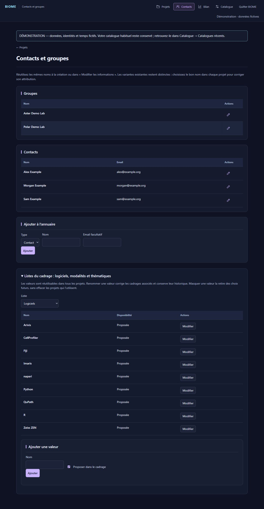
12. Lire et exporter le bilan
Bilan permet une année ou une période personnalisée inclusive, avec temps total renseigné, projets actifs, groupes et contacts impliqués. Les graphiques montrent l’évolution du temps et les répartitions par groupe et intervention. Dépliez les autres catégories et les tableaux si nécessaire. Cliquez sur un projet pour revenir à son dossier.
L’attribution temporelle utilise la date des séances. Les statuts et catégories affichés sont les valeurs actuelles. Une absence de saisie ne prouve pas une absence de travail. Un projet peut relever de plusieurs logiciels ou thématiques : ces nombres ne s’additionnent pas comme une répartition exclusive des heures. Les anciens totaux non datés restent séparés.
Exporter le bilan (ZIP) produit le rapport PDF et les fichiers tabulaires détaillés de la période. Le PDF a sa propre mise en page ; il ne repose pas sur l’impression de la page du navigateur.
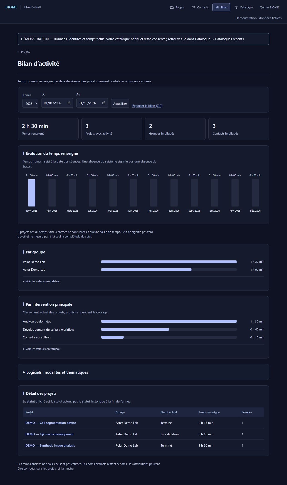
13. Vérifier les dossiers et les accès
Dans Catalogue → État des dossiers, lancez Vérifier les dossiers et les accès. Le contrôle lit les informations du projet, dates et durées des séances, liens du cahier et pièces jointes, livraisons enregistrées et accès aux emplacements externes. Tous les emplacements enregistrés sont pris en compte, avec progression.
Un fichier accessible est présent et lisible ; un dossier accessible peut être consulté. Une référence manquante, un refus d’accès ou un délai dépassé demande de vérifier le chemin, le disque, le réseau ou le VPN. Ce contrôle n’atteste ni la qualité scientifique des images, ni une intégrité complète de tous les fichiers d’un dossier externe. Il n’effectue aucune réparation et ne remplace pas une sauvegarde.
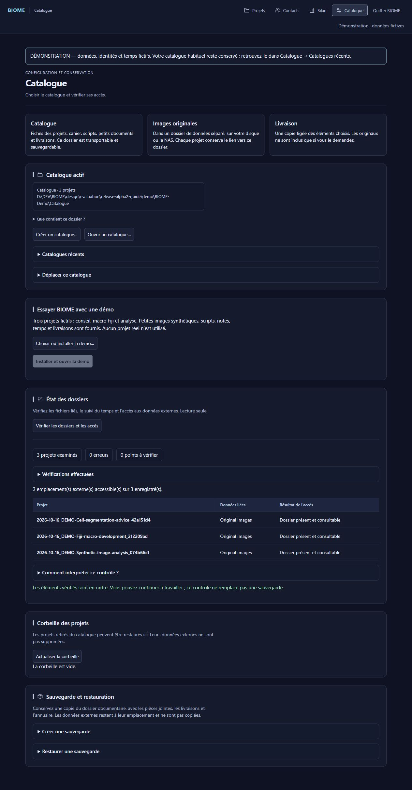
14. Retirer et restaurer un projet
Dans un projet, Supprimer le projet… demande confirmation puis déplace son dossier documentaire dans la corbeille BIOME. Les données externes restent à leur emplacement. Ce retrait est récupérable.
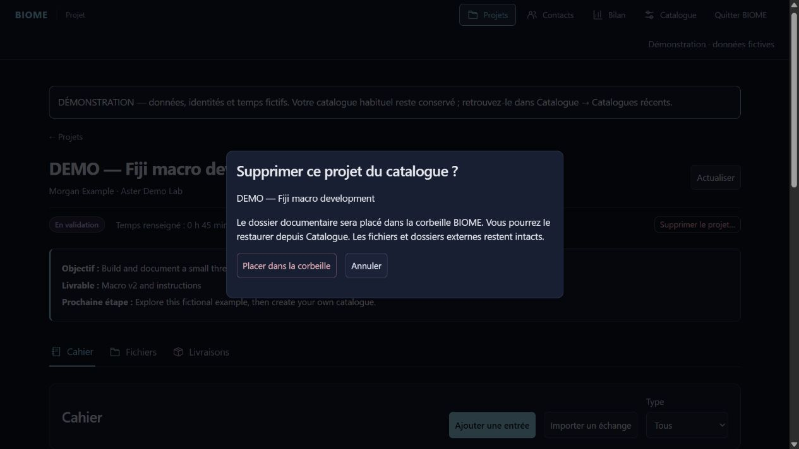
Dans Catalogue → Corbeille des projets, cliquez sur Restaurer. BIOME rétablit le dossier sans écraser un projet déjà présent. Il n’y a pas de purge définitive proposée dans cette préversion.
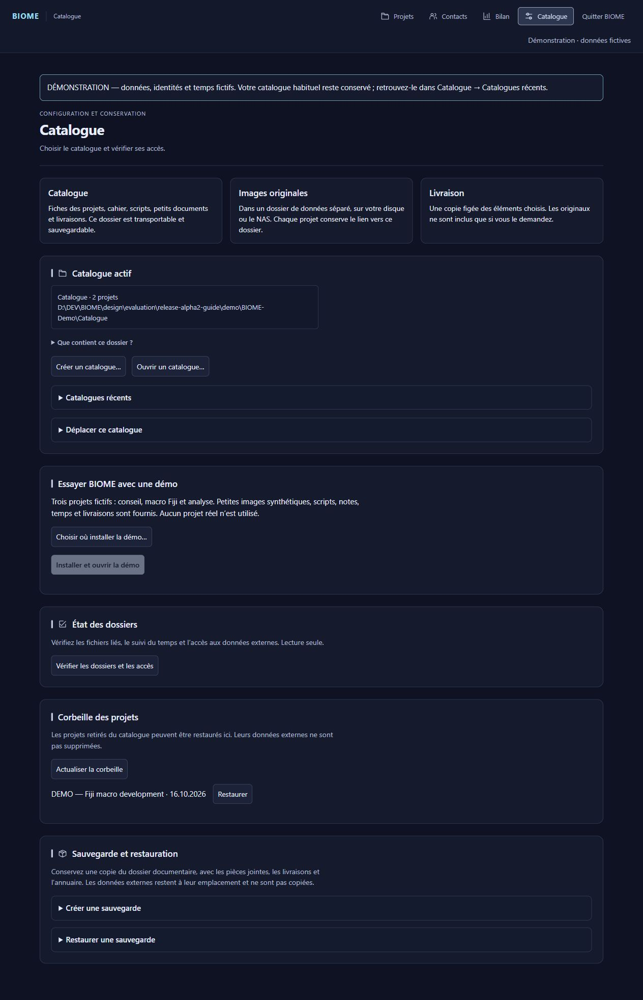
15. Sauvegarder, restaurer ou déplacer le catalogue
Créer une sauvegarde : choisissez une destination hors du catalogue et lancez la sauvegarde vérifiée. Elle inclut les documents, pièces jointes, livraisons et annuaire. Évitez les modifications externes pendant la copie. Les originaux référencés ont besoin de leur propre sauvegarde.
Restaurer une sauvegarde : choisissez le ZIP et un dossier parent. BIOME vérifie l’archive et crée un nouveau dossier ; le catalogue actuel reste conservé.
Déplacer ce catalogue : choisissez le nouveau dossier parent. BIOME copie le catalogue, vérifie ses fichiers puis utilise la nouvelle copie. L’ancien reste conservé comme copie de secours. Après bascule, les deux copies sont indépendantes : utilisez le catalogue choisi et vérifiez son chemin avant de travailler. Les originaux externes ne sont pas déplacés.
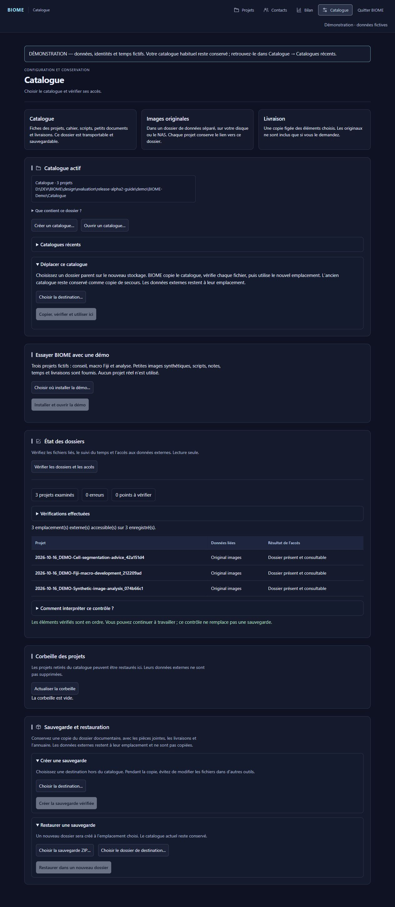
16. À propos de l’ancien BIOME
BIOME-next est le successeur en développement de BIOME 2.x. Son modèle documentaire diffère de l’ancienne architecture React/SQLite/Tauri. Un catalogue BIOME-next n’est pas une base SQLite de BIOME 2.x. Cette release ne propose pas d’import automatique universel de l’ancien format. Conservez vos anciennes données et sauvegardes ; une récupération historique doit être préparée séparément et contrôlée.
Limites et retours utiles
La version est une alpha Windows x64, avec une interface française et une fenêtre utilisant Chrome ou Edge. Elle n’est pas signée numériquement. Les fichiers restent locaux ; aucun service d’IA n’interprète vos demandes. Les données de la démo ne valident aucune méthode d’analyse.
Pour signaler un problème, indiquez la version, l’étape et le résultat attendu, avec un exemple fictif. Ne joignez ni catalogue réel, email privé, images de recherche ni identifiants. Le dépôt actif contient le code, les tests et les prochaines évolutions.
Nouveautés alpha 6 : projets et bilan
La liste des projets sépare Groupe / laboratoire et Contact, avec un tri indépendant sur chaque colonne. Un groupe peut être désigné par son responsable (PI), le laboratoire, le département ou la plateforme. Les crochets ne sont plus nécessaires pour distinguer ces libellés du contact ; les noms existants sont conservés.
Chaque répartition du bilan indique son nombre de projets pris en compte et exclus. Pour les heures par groupe ou intervention, un projet doit avoir cette catégorie et du temps renseigné. Pour les logiciels, modalités et thématiques, seule la catégorie est nécessaire. Un zéro explicitement saisi reste comptabilisé. Les projets sans temps renseigné restent accessibles dans le volet dépliable du détail. Les exclusions sont calculées parmi les projets avec une activité documentée dans la période choisie.
Le total du temps reste la somme de tous les temps saisis, même sans catégorie : il peut donc dépasser la somme d’une répartition. Les CSV et le PDF suivent les mêmes règles ; coverage.csv fournit les effectifs et motifs d’exclusion. Le détail exporté conserve tous les projets de la période.
Alpha 7 : version ouverte et suppression des fiches
La version effectivement ouverte est affichée en haut de la fenêtre. Si une autre version fonctionne encore, le nouveau lanceur vous demande de cliquer sur Quitter BIOME dans cette ancienne fenêtre, puis de relancer la nouvelle version. Fermer uniquement la fenêtre peut laisser le serveur local actif.
Dans Contacts, cliquez sur Supprimer…. Une fiche inutilisée peut être retirée après confirmation. Si elle est associée à des projets, la liste des projets concernés est affichée et une fiche de remplacement du même type est obligatoire. Créez-la d’abord si nécessaire. Le bouton Réattribuer et supprimer met à jour les noms et l’email du contact dans les projets, puis retire l’ancienne fiche. Les bilans utilisent les nouvelles attributions. Les notes, livraisons et historiques sont conservés. Les projets dans la corbeille restent inchangés ; leur restauration peut réintroduire une ancienne fiche.